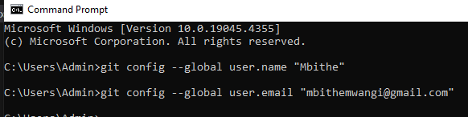
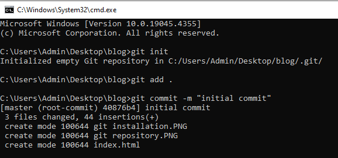
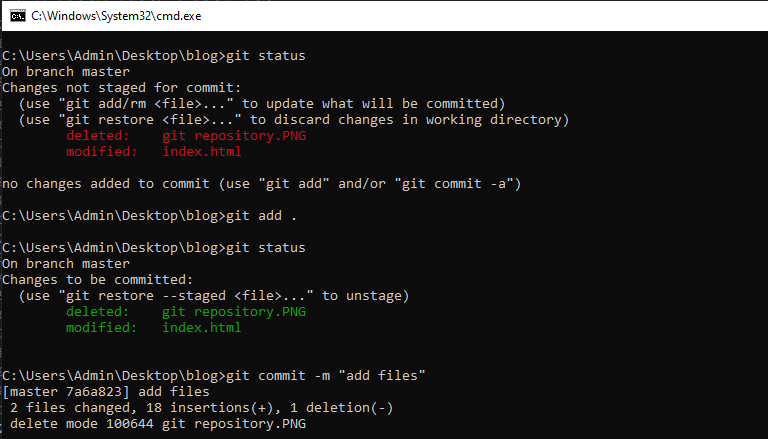
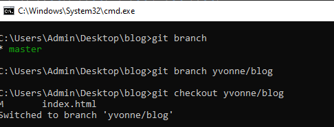
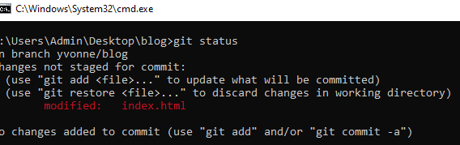
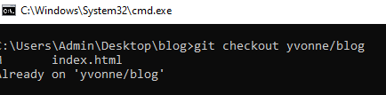
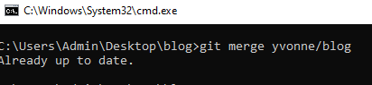

What is Git
Git is a widely-used version control system that allows developers to manage and track changes to their codebase efficiently.
Git is a version control system that tracks changes to code, enabling collaboration, history tracking, and seamless integration of modifications.
Version control system (VCS), is a tool that tracks and manages changes to files over time.
While there are several version control systems available, such as Mercurial and Subversion (SVN), this blog will primarily focus on Git and its integration with GitHub. Git is widely used for its distributed version control capabilities, enabling developers to work offline and collaborate seamlessly. GitHub, on the other hand, is a web-based platform that hosts Git repositories and facilitates collaboration among developers. Together, Git and GitHub provide a robust environment for version control and collaboration in software development projects.
Installing Git
How to download and install Git if it is not availabe on your machine
- Visit the official Git website at https://git-scm.com/downloads.
- Select the appropriate download link for your operating system (Windows, macOS, or Linux).
- Follow the installation instructions provided on the website or in the downloaded installer.
- During the installation process, you may be prompted to choose various options such as the installation directory, components to install, and integration with other software.
- Once the installation is complete, you can verify that Git is installed by opening a command prompt or terminal window and typing
git --version. If Git is installed correctly, you should see the version number displayed.

checking whether a directory contains git repository
Configuring Git
How to configure username and email address
- Open your command prompt
- Type the command git config --global user.name "Your name"
- Hint enter
- Type the coomand git config --global user.email "Your email"
- Hit enter

Configuration of user name and email
Initializing a Git repository
A Git repository is a virtual storage space where a project's files and their
revision history are stored and managed using the Git version control system
How to initialize git repository
- Open your terminal or command prompt and navigate to the directory where you want to initialize the Git repository.
- Once you're in the project directory, use the 'git init' command to initialize a new Git repository.
- If you have existing files in your project directory that you want to include in the repository, you can add them using the git add command followed by a dot (.) to add all files.
- After adding the files, you need to commit them to the repository. This step records the changes to the repository's history.

Initializing a git repository
Adding files to the staging
The staging area, often referred to as the "index," is a crucial concept in version control systems like Git.
It serves as a middle ground between your working directory.Tracked Files: These are files that Git is aware of and are already being version-controlled. Tracked files can be in one of three states: modified, staged (in the staging area), or committed (in the repository). Git actively tracks changes to these files While
Untracked Files: These are files that Git is not currently version-controlling. Untracked files are typically new files that you haven't added to Git yet. Git ignores these files unless you explicitly tell it to start tracking them
Process of adding files to the staging area
- Check the Status of Your Files using command 'git status'.
- Add Files to the Staging Area using command 'git add' followed by name of the file.
- Verify the Staging Area using command 'git status'.
- Commit the Changes using command git commit -m 'Your message'

Process of adding files to staging area
Branches
In Git, a branch is a separate line of development that diverges from the main line
(usually called the "master" branch). Branches allow multiple developers to work on different features or fixes simultaneously without interfering with each other's work.
Each branch represents an independent series of changes to the codebase.
Creating a branch
- Open your terminal or command prompt and navigate to the directory of your Git repository using the cd command
- Check your current branch using get branch command.
- Create a new branch, use the git branch command followed by the name of the new branch.
- After creating the branch, you need to switch to it to start working on it. Use the git checkout command followed by the name of the new branch.
- To verify that you've successfully created and switched to the new branch, you can use the git branch command again.

Viewing all branches
To view all branchesse 'git branch' command.

command to view active branches
Switching active branches
After creating the branch, you need to switch to it to start working on it. Use the git checkout command followed by the name of the new branch.
.To verify that you've successfully created and switched to the new branch, you can use the git branch command again.

switching active branches
Merging branches
To merge branch use git merge 'branch name' command.

merging branches
Deleting branches
To delete a branch use git branch -D 'branch name'
deleting branches
Next steps
- Learn more about branching strategies like feature branches, release branches, and hotfix branches.
- Explore Git hooks, which allow you to automate actions or run custom scripts in response to certain Git events.
- Dive deeper into interactive rebasing to understand how to rewrite commit history, squash commits, reorder commits, and more.
- Familiarize yourself with popular Git workflows like Gitflow, GitHub flow, and GitLab flow, and understand when and how to apply them in different project scenarios.
- Learn how to manage dependencies in Git using submodules or subtrees, allowing you to include external repositories within your project.